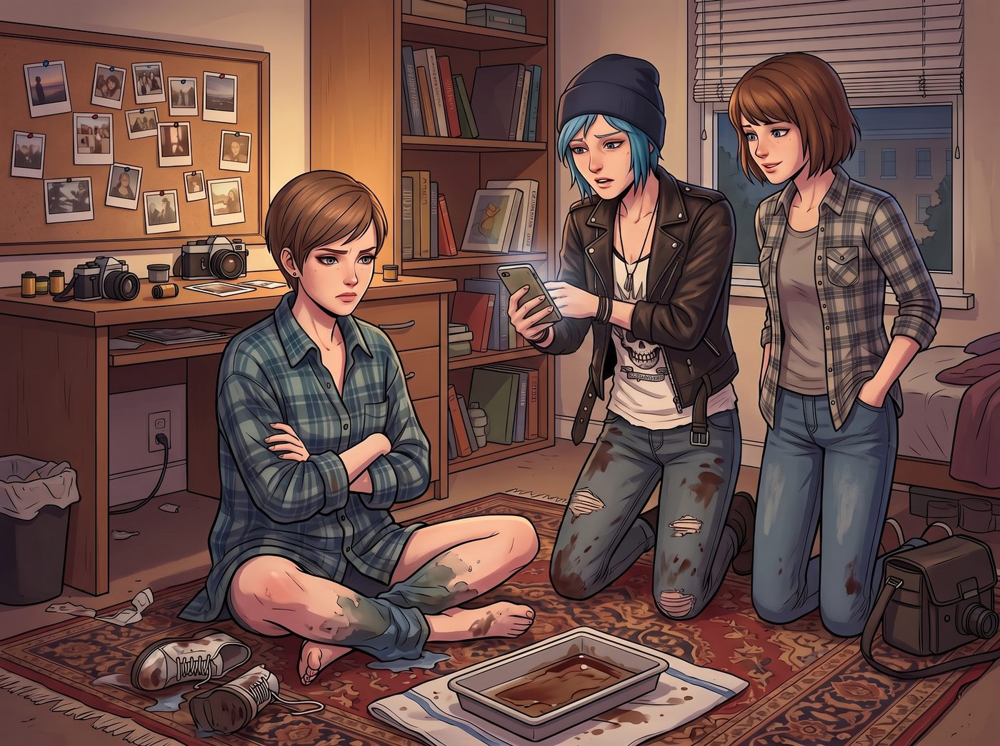

民工級外賣修羅場

一、狼狽的戰後餘生
經歷了跳閘、定影液潑鞋和手電筒搶救照片的一番混亂後,渾身狼狽的 Victoria,被迫換上 Chloe 借她的一件洗得掉色的大號法蘭絨襯衫,盤腿坐在 Max 房間的地毯上。
「叫點外賣吧,」Chloe 一邊揉著發酸的手臂,一邊翻出手機,「今晚這場硬仗,總得補充點熱量。」
二、飲食文化的階級震撼
沒過多久,Chloe 從小鎮碼頭那家最便宜的油炸攤,叫來一大堆外賣——用紙盒裝著的油炸洋蔥圈、浸透油脂的雙層芝士牛肉漢堡,還有一大桶塑膠瓶裝的廉價根汁汽水。
Victoria 捧著那個油膩的紙盒,眉頭皺得能夾死蒼蠅,用兩根手指小心翼翼地捏起一根洋蔥圈,眼神像是在端詳某種未知的生化武器。
「Price,」她語氣裡帶著難以置信的嫌棄,「這東西的飽和脂肪酸含量,大概能直接堵死一頭成年藍鯨的動脈。」
「不吃就餓著,大小姐,」Chloe 嚼著漢堡,翻了個白眼,「這可是全阿卡迪亞灣最有嚼勁的牛油麵包,比妳平時吃的那些像啃草一樣的羽衣甘藍沙拉,強一萬倍。」
三、身體的誠實
飢餓和體力耗盡的雙重逼迫下,Victoria 終於試探性地咬了一小口那根洋蔥圈。
咀嚼的瞬間,她的眼神微微一變。
雖然嘴上依然嘟囔著「粗俗的熱量炸彈」,那隻手,卻誠實地伸向了紙盒裡的第二塊炸雞。
Max 在一旁看著這一幕,忍不住偷笑,識趣地沒有戳破。
四、敲門聲響起
三人正圍坐在茶几前,滿地散落著油膩的紙袋,虛掩的房門忽然又被輕輕敲響。
Kate 抱著幾本筆記本和一罐自製的蜂蜜柚子茶走了進來。
五、四方石化
房間裡的畫面,讓 Kate 站在門口愣了整整兩秒——曾經在學校裡不可一世、永遠踩著高跟鞋的時尚女王 Victoria Chase,此刻頭髮蓬亂、光著一雙腳丫、穿著土氣的格子法蘭絨襯衫,嘴角甚至還沾著一點廉價燒烤醬;一旁是咬著肉乾放聲大笑的 Chloe,和手裡捏著可樂罐、一臉看戲表情的 Max。
Kate 迅速收起臉上的驚訝,重新露出那個溫柔的招牌微笑。
「抱歉,」她說,「我是不是打擾你們的晚餐了?我只是來還 Max 的藝術史筆記。」
Victoria 在看清來人的瞬間,整個人像觸電般僵住——她慌忙抽過一張紙巾,手忙腳亂地擦掉嘴角的醬汁,又下意識地把光著的雙腳,往寬大的褲腿裡縮了縮,臉頰瞬間漲得通紅。
那是她這輩子,極少在人前展露出的、徹底的無地自容。
六、僵硬的沉默
「Kate,」Victoria 的聲音有點發緊,努力想維持最後一點體面,「這個……只是臨時的意外情況。」
「沒關係,」Kate 溫和地笑了笑,把筆記本遞給 Max,語氣裡沒有絲毫嘲笑的意味,「看起來你們玩得挺開心的。」
Chloe 在一旁咬著薯條,饒有興味地看著這場尷尬的重逢,絲毫沒有替 Victoria 解圍的打算,反而故意添油加醋:「Kate 要不要也來一根洋蔥圈?我們大小姐剛才可是吃了整整三根。」
「Chloe!」Victoria 幾乎是從牙縫裡擠出這句咬牙切齒的威脅。
Kate 被這場鬧劇逗得抿嘴輕笑,卻沒有久留,寒暄兩句後便禮貌告辭,轉身走出了房間。
門重新關上的那一刻,Victoria 長長地舒了一口氣,像是剛從某種酷刑裡解脫出來,整個人癱軟地靠回沙發椅背。
「我這輩子,」她喃喃自語,聲音裡帶著劫後餘生的虛脫,「大概再也沒臉見 Kate Marsh 了。」